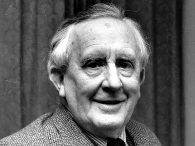

|  |
J. R. R. Tolkien
English writer, poet, philologist, and academic, best known as the author of the high fantasy works The Hobbit and The Lord of the Rings.
From 1925 to 1945, Tolkien was the Rawlinson and Bosworth Professor of Anglo-Saxon and a Fellow of Pembroke College, both at the University of Oxford. He then moved within the same university, to become the Merton Professor of English Language and Literature and Fellow of Merton College, positions he held from 1945 until his retirement in 1959. Tolkien was a close friend of C. S. Lewis, a co-member of the informal literary discussion group The Inklings. He was appointed a Commander of the Order of the British Empire by Queen Elizabeth II on 28 March 1972. |